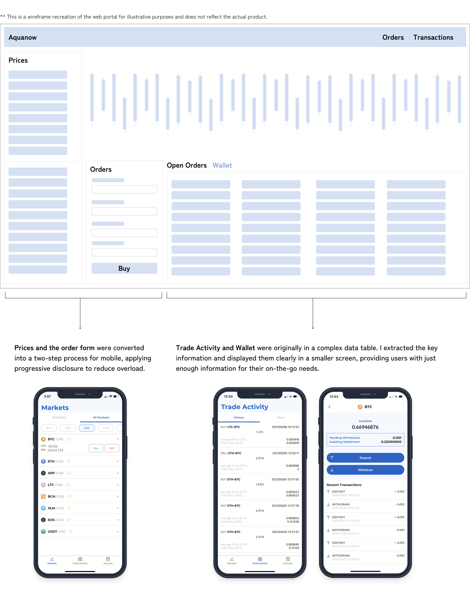

I designed the Aquanow mobile app, which saved time for the operations support team by converting a crypto-trading platform from web to mobile, allowing customers to self-serve basic trading and wallet management.
The Problem
The only option for self-serve crypto trades were through the company’s web trading portal. However, customers were often on-the-go and could not easily access the portal. This resulted in the operations team being overloaded with simple requests such as balance checking, basic trades, and deposits/withdrawals.
I was tasked with gathering the customer requirements from the operations team, identifying the customer’s needs, and delivering a comprehensive design for the mobile version of the web portal.

Requirements
As I was new to cryptocurrency, I conducted a competitive analysis on four popular cryptocurrency mobile apps to get myself up to speed and identify industry standards and best practices that would drive my design decisions and got buy-in from stakeholders.
Progressive Information Disclosure
Screen space on mobile is limited in comaprison to web, meaning we need to balance the information density on each page.
Remove the Fluff, Get to the Prices
Prices were displayed prominently on the dashboard, meaning you could begin thinking about trades right away with minimal barriers like setting up your wallet until users were ready to trade.
Prioritize Numbers Over Charts
The most important information was the coin name and price. Only after digging deeper is the user exposed to detailed trading charts with changes over time.

Use Case & Customer Journey
I received feature requirements from the operations team but before diving in, I took a step back to confirm we were tackling the right issue. I conducted a user journey mapping exercise, consulting with subject matter experts for accuracy. Emphasizing the customer's perspective, we validated that features were addressing specific pain points, boosting confidence in our solution.

Web to Mobile Architecture
Markets
The market view was the first page that customers would see and it showed the prices for coins.There were many different elements of the page that competed in importance so it was critical to find the right balance to increase the chances of converting users from browsing to completing a trade. I listened closely to our subject experts’ feedback, while also referring to the competitors that I studied at the start and providing a user-focused perspective. We came to a final design that satisfied everyone’s concerns.
Web to Mobile
My prior mobile design experience proved invaluable, especially as the team was predominantly versed in web design. I was transparent about design rationale, emphasizing changes needed to convert UI from web to mobile. This fostered mobile design fluency among the team, resulting in more targeted feedback and enhanced UX overall.
After 3 months of hard work, our app was finally released and helped reduce the operations team work load.
I was at the end of a 3 month contract but the quality of my work and attitude on the project had impressed the CTO. I was offered a full-time position as the lead UX designer, taking ownership of Aquanow’s full suite of web applications to make them enterprise-ready.
Over my time at Aquanow, I worked on a multitude of projects for 4 web apps and 1 mobile app. I created the Aquanow design system which was used for customer-facing UIs. I spearheaded initiatives to do usability research with internal users for our internal apps and had the opportunity to hire and mentor a junior co-op student. I learned a whole lot from my experience here and if you’ve made it all the way to the end of my story, I’d love to chat with you more in an interview.